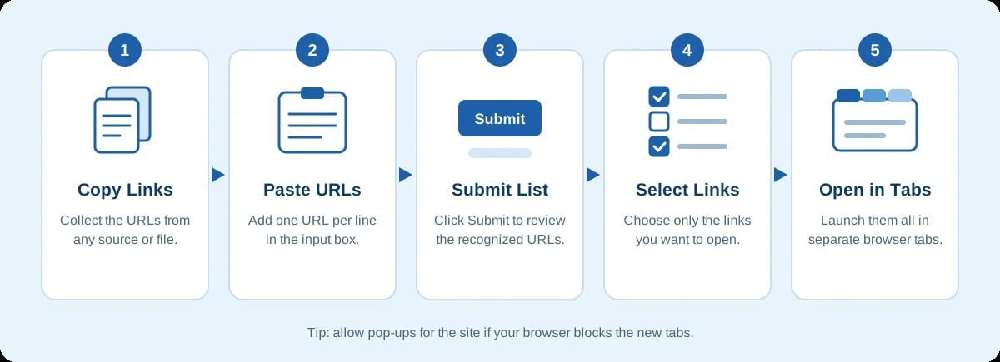

Bulk URL Opener: Open Multiple Links at Once
Opening links one at a time might not seem like a big deal until you're doing it dozens of times every day. Whether you're researching websites, testing pages, reviewing client projects, checking backlinks, comparing online resources, or managing a large list of URLs, repetitive clicking can quickly slow down your workflow.
Submit Your URLs
Paste one URL per line or import a TXT or CSV file.
Enter one URL per line. Accepts direct links to webpages, PDFs, DOC/DOCX, XLS/XLSX, PPT/PPTX, images and other publicly accessible files — any valid http:// or https:// URL.
TXT files should list one URL per line. CSV files with a header like "URL" or "Link" are read automatically; otherwise every cell that looks like a URL is imported. Excel (.xlsx, .xls) files are scanned across all worksheets, and Word (.docx) files are scanned for visible links and hyperlink destinations. Files are limited to 10 MB.
Only URLs that pass validation will be opened. Your browser may ask you to allow multiple tabs. Whether a link opens in the browser or downloads depends on the destination site, not on this tool.
What Is a Bulk URL Opener?
Bulk URL Opener is an online tool that opens multiple websites from a single list, each in its own browser tab. Instead of copying, pasting and clicking link by link, you add your list once and open the pages together.
It’s useful whenever your work involves going through many pages in a short time. SEO professionals can open competitor pages or groups of URLs for manual research. Developers can reach staging pages and project links quickly, while marketers and website owners can organize campaign pages, product URLs and other web resources.
We built this tool to save the time people lose on repetitive tasks, so they can spend it on work that matters. Bulk URL Opener is free to use, with no signup required.
Features That Make Bulk URL Opener Useful
-
Lightning Fast
Open multiple URLs in new tabs with one click instead of visiting each link one by one.
-
URL Validation
Each entry is checked for a valid http:// or https:// format, and invalid entries are listed separately.
-
Cross-Platform
Runs in your browser on desktop, tablet and mobile. Tab limits and popup settings depend on your browser.
-
SEO Research
Open competitor pages or a list of site URLs together to review multiple websites faster.
-
Duplicate Detection
Repeated URLs are flagged, and you can remove them before opening your list.
-
Free to Use
Use the tool at no cost. Your list is processed in your browser.
Using Bulk URL Opener on Any Operating System and Browser
Bulk URL Opener runs in your web browser, so there’s nothing to download or install. It works on Windows, macOS, Linux, Android and iOS, in browsers like Chrome, Edge, Firefox, Opera, Safari and Brave.
The steps are the same everywhere: add your list, review the links, select the ones you want and open them in new tabs.
Some browsers block several new tabs opening at once, and mobile browsers can be stricter about it. If that happens, allow pop-ups for this site in your browser settings and try again.
Supported Operating Systems
Desktop & Mobile Platforms
Supported Browsers
Modern Web Browsers
Supported File Formats and Import Limits
You don't have to copy and paste website addresses manually when working with large URL lists. Bulk url opener allows you to import multiple URLs directly from different file formats, making it easier to organize and open website links in bulk.
The tool supports TXT, CSV, Excel, and Word documents, so you can use existing URL lists without having to prepare them in a specific format.
Supported File Formats
- TXT Files (.txt): Import plain text files containing website addresses, with one URL per line.
- CSV Files (.csv): Import URLs from a column named "URL" or "Link". If neither column is available, the tool automatically identifies cells containing addresses that start with http:// or https://.
- Excel Files (.xlsx, .xls): Upload Excel spreadsheets to extract website addresses from all worksheets. The tool recognizes hyperlink destinations as well as visible text containing http://, https://, or www.. Plain domain names, such as example.com, are not detected unless they are stored as hyperlinks.
- Word Documents (.docx): Extract website addresses from document text, headers, footers, footnotes, and endnotes. Hyperlinks are also recognized, including links where the displayed text differs from the actual destination URL. Older .doc files are not supported, so save them in .docx format before importing.
File Size and URL Import Limits
To keep file imports manageable, each uploaded file can be up to 10 MB, with a maximum of 2000, unique URLs per import. Duplicate website addresses are not counted as separate unique URLs.
Files are processed locally in your browser. Excel and Word import features load their required readers from a public CDN the first time you use them, so an internet connection is needed for those imports. Your uploaded file contents are not sent to the CDN.
Browser and URL Opening Limitations
The number of browser tabs that can open at once depends on your browser and device. Opening a very large number of URLs together may affect browser performance, so processing links in smaller batches can be more manageable.
Also, whether a selected link opens as a webpage or triggers a file download depends on the destination website and how it handles that URL.
How to Open Multiple URLs at once
Opening website links one by one can take time, especially when you have a long list to go through. With bulk url opener, you can put those links together and open multiple URLs from a single place.

Getting started doesn't require much. Just follow these steps:
- Copy Your Website Links: Collect the URLs you want to visit from your browser, spreadsheet, document, or any other source.
- Paste the URLs: Add your copied links to the URL input box. You can enter multiple website addresses, with each URL on a separate line.
- Submit Your List: Click the Submit button to process the links. The tool will display the recognized URLs for review.
- Select the Links: Choose the website addresses you want to open. You don't have to open every URL in your list.
- Open in New Tabs: Click the available opening option to launch your selected websites in separate browser tabs.
That's it. You can use the same process whenever you need to open multiple website links without handling each address individually. These tools make your work smooth and time saving.
Keep in mind that your browser may block multiple new tabs if pop-up permissions are restricted. You may need to allow pop-ups for the website before opening your selected URLs.
Remove Duplicate URLs from a List
When working with a large list of website addresses, the same URL can sometimes appear more than once. Bulk Url Opener provides a Remove Duplicates option that helps clean up repeated entries before opening your links.
Once your URLs are added, click Remove Duplicates to remove repeated addresses from the list. You can then submit the remaining entries for validation and open the links you need. This is particularly useful when combining URLs collected from different sources.
You can also use Clear All to remove the current list and start with a new set of website addresses.
Ready to start Bulk URL Opener?
Frequently Asked Questions
Yes. You can use it at no cost and without creating an account.
Paste your links into the input box, one per line, or import them from a file. Click Submit URLs to review the recognized links, select the ones you want and open them in new tabs.
Most often, your browser is blocking multiple new tabs. Look for the blocked pop-up notice in the address bar and allow pop-ups for this site, then try again. Some links may also start a download instead of opening as a page, which depends on the destination website.
You can import up to 2,000 unique URLs per file. How many tabs actually open at once depends on your browser and device, so for long lists it works better to open links in smaller batches.
You can import TXT, CSV, Excel (.xlsx, .xls) and Word (.docx) files. Each file can be up to 10 MB. Older .doc files are not supported, so save them as .docx first.
Yes. Click Remove Duplicates to clean up repeated URLs before opening your list. Duplicates are also counted only once toward the import limit.
Each entry is checked for a valid http:// or https:// format. Only URLs that pass validation are opened, and invalid entries are listed separately so you can fix them.